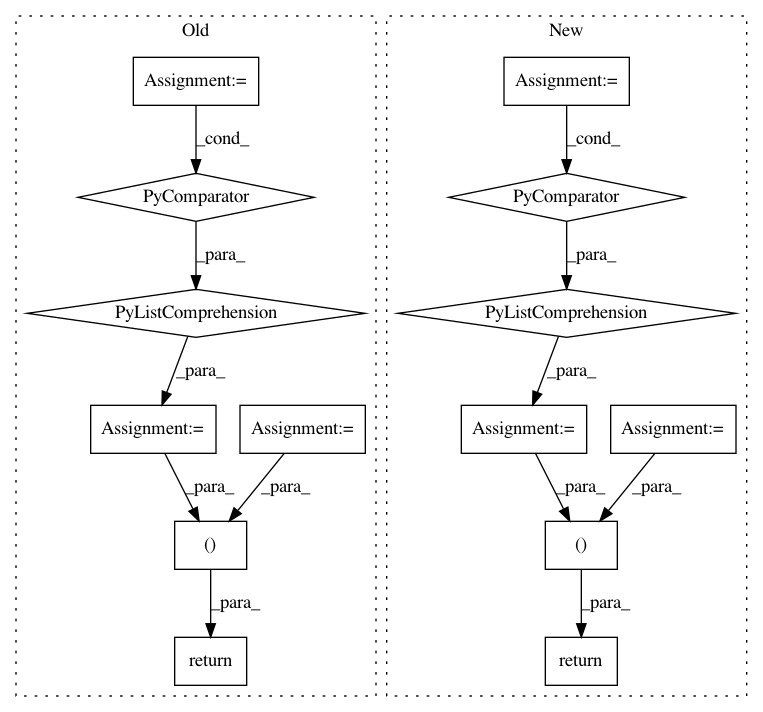

80cfb0e5f889c65a972ebde6c6dae4278b5e28c1,foolbox/attacks/base.py,MinimizationAttack,__call__,#MinimizationAttack#Any#Any#Any#,340
Before Change
early_stop = None
else:
early_stop = min(epsilons)
limit_epsilons = [eps if eps is not None else ep.inf for eps in epsilons]
del epsilons
// run the actual attack
xp = self.run(model, x, criterion, early_stop=early_stop, **kwargs)
// TODO: optionally improve using a binary search?
// TODO: optionally reduce size to the different epsilons and recompute is_adv
is_adv = is_adversarial(xp)
assert is_adv.shape == (N,)
distances = self.distance(x, xp)
assert distances.shape == (N,)
in_limits = ep.stack(
[distances <= epsilon for epsilon in limit_epsilons], axis=0
)
assert in_limits.shape == (K, N)
success = ep.logical_and(in_limits, is_adv)
assert success.shape == (K, N)
xp_ = restore_type(xp)
if was_iterable:
return [xp_] * K, restore_type(success)
else:
return xp_, restore_type(success.squeeze(axis=0))
class FlexibleDistanceMinimizationAttack(MinimizationAttack):
def __init__(self, *, distance: Optional[Distance] = None):
After Change
xpcs.append(xpc)
success.append(is_adv)
success_ = ep.stack(success)
assert success_.shape == (K, N)
xp_ = restore_type(xp)
xpcs_ = [restore_type(xpc) for xpc in xpcs]
if was_iterable:
return [xp_] * K, xpcs_, restore_type(success)
else:
assert len(xpcs_) == 1
return xp_, xpcs_[0], restore_type(success_.squeeze(axis=0))
class FlexibleDistanceMinimizationAttack(MinimizationAttack):
def __init__(self, *, distance: Optional[Distance] = None):
In pattern: SUPERPATTERN
Frequency: 4
Non-data size: 14
Instances
Project Name: bethgelab/foolbox
Commit Name: 80cfb0e5f889c65a972ebde6c6dae4278b5e28c1
Time: 2020-02-14
Author: git@jonasrauber.de
File Name: foolbox/attacks/base.py
Class Name: MinimizationAttack
Method Name: __call__
Project Name: calico/basenji
Commit Name: 5ba781c281d60ad03d0c8088400a73802dd82d03
Time: 2018-05-11
Author: noreply@google.com
File Name: basenji/ops.py
Class Name:
Method Name: per_target_r2
Project Name: tensorflow/transform
Commit Name: a324e96dd3e318a14f813a824e8c14a5d145cd91
Time: 2018-01-08
Author: tf-transform-dev@google.com
File Name: tensorflow_transform/analyzers.py
Class Name: _NumPyCombinerSpec
Method Name: add_input
Project Name: rusty1s/pytorch_geometric
Commit Name: f6532b3c4c329e6d5d5fb846acc441df47616c4c
Time: 2020-03-22
Author: matthias.fey@tu-dortmund.de
File Name: torch_geometric/nn/models/gnn_explainer.py
Class Name: GNNExplainer
Method Name: explain_node